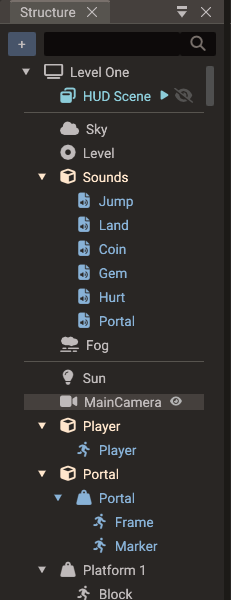
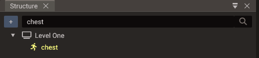

Structure Panel¶
The Structure panel is the editor's tree view for scenes and entities. It is also the
clearest way to understand Quantum's ECS model: everything shown under a scene is an
entity, but only entities with a Transform participate in the spatial hierarchy.

Scene root¶
The top node is the selected scene. Child scenes are shown before entities. If a child scene is expanded inline, its entities are shown under that child scene node.
Child scenes¶
A scene can reference other scenes as child scenes so they load and run together as one scene stack. Child scene nodes appear above the parent's entities, tinted soft teal to set them apart.
Add a child scene in one of two ways:
- Right-click the scene root and choose Add child scene → SceneName (the submenu lists every other scene that is not already attached and does not already contain this one).
- Drag a
.scenefile from the Resources Browser onto the scene root.
A scene can't end up inside itself, directly or through other child scenes. An add that would create such a cycle is refused with an error in the Output panel. So is an undo or redo that would bring one back after another scene changed, and the history then stays where it is.
Right-click a child scene node for its menu:
| Action | Effect |
|---|---|
| Start active | Toggles whether the child scene is added to the engine automatically when the parent loads. On (the default) means it runs immediately; off means it is built with the parent but hidden, ready for SceneManager.addChildScene to show it with no loading cost. A scene does not have to be a child scene to be added at runtime — being one is what makes it preloaded. |
| Remove child scene | Detaches the reference (it does not delete the scene file). |
Each child scene row also shows a small play or pause mark next to the name: play means Start active is on; pause means it starts inactive. Hover the mark for a tooltip. Click the eye icon on a child scene node to load it inline — its entities appear nested under the node so you can view and edit them in the parent's context. This is an editing convenience and does not affect runtime behavior.
The entities shown inline still belong to the child scene. Dragging one only creates a reference to it: drop it on a script's entity property in Properties, or on a script open in the Code Editor. Drop targets that would change the parent scene refuse it, with the tooltip Entity belongs to another scene. That covers reparenting it in this tree, saving it as a bundle in the Resources Browser, and assigning it to a component field such as a joint's bodies. To make those changes, open the child scene itself.
Order matters: scenes render as layers, with the main scene at the bottom and each child scene drawn on top of the ones listed above it — so the last child scene is the topmost layer. The order follows the order you added the child scenes; to change it, remove them and add them back in the sequence you want (top-most last). See Child scenes in the manual for the full runtime model.
Empty entity vs empty object¶

Open the create menu with the + button at the top of the panel (Create entity; the same menu starts a new 3D, 2D, or UI scene), by right-clicking empty space in the panel, or with Create child in an entity's right-click menu, which creates the new entity under it.
The create menu has two intentionally different entries:
| Entry | Components added | Meaning |
|---|---|---|
| Empty entity | None | A pure entity ID. Use it for logic, global scripts, non-spatial data, or components that do not need a transform. |
| Empty object | Transform |
A spatial entity. It can be positioned, parented, rendered, and shown in the hierarchy. |
This distinction matters because the entity itself owns nothing. Components decide what the ID can do.
The rest of the create menu adds ready-configured entities (camera, light, sky, fog, sound, mirror, reflection probe, water), basic shapes, 2D and UI objects, physics bodies, and more — each one is just an entity with the right components already attached.
The 2D submenu includes 2D Light and 2D Occluder for the 2D lighting system — see 2D Graphics — 2D lighting.
Basic shapes¶
Basic shape creates a mesh entity with procedural geometry: Box, Plane, Wall,
Sphere, Cylinder, Capsule, and Torus. A Plane lies flat (normal points up, +Y); a
Wall stands upright facing the camera (normal points +Z) — handy for walls,
backdrops, and mirror surfaces. You can change a mesh's geometry later from the
Create Shape dropdown in Properties.
Mirror¶
Mirror is a one-click convenience entry: it creates a Wall with a Mirror component already attached, giving an upright planar-reflection surface with no camera or texture setup. See Rendering Pipeline — Mirrors.
Reflection Probe¶
Reflection Probe creates an entity with a Transform and a Reflection Probe component: a box-shaped volume that gives the meshes inside it a local reflection environment instead of the global sky. Size the box to the room it represents in Properties. See Rendering Pipeline — Reflection probes.
Water¶
Water creates an entity with a Transform and a Water component: a 50 × 50 animated water surface at the entity's height, with waves, ripples, refraction, and shore foam on by default. Move the entity to set the water level, and adjust its size and waves in Properties. See Rendering Pipeline — Water.
Water Exclusion¶
Water Exclusion creates an entity with a Transform and a Water Exclusion component set to a 1 × 1 × 1 box: a volume the water stays out of, for a cabin, a cave, or a diving bell. To keep the water out of a boat, add the component to the boat itself instead; its default Hull shape wraps the boat's mesh.
Hierarchical area¶
Entities with Transform appear in the hierarchy area. Their parent-child relation is
stored in Transform::parent, and their order is managed by the scene registry. Moving
a parent updates child world transforms through that parent chain.
Common entities in this area include objects, sprites, models, cameras, lights, 3D sounds, physics bodies, UI widgets, points, lines, terrain, and mesh polygons.
Tree marks and collapse¶
| Mark | Meaning |
|---|---|
| Clone icon | The entity has an Instanced Mesh with one or more instances (tooltip shows the count) |
| Play / pause | Child scene Start active on / off (see Child scenes) |
Imported Model entities with child nodes start collapsed once their children finish loading, so multi-mesh GLTFs and full node trees do not flood the tree. Bones also start collapsed. Expand a row when you need to edit children.
When a parent is collapsed in Structure, clicking its hidden children in the Scene view selects the nearest expanded ancestor instead — so picking in the viewport matches what you can see in the tree. Expand the model (or other parent) if you need to select a specific child mesh or node.
GLTF files with animation clips, or more than one skin, import the full node tree under the Model (helpers, joints, and mesh nodes). Static multi-mesh files still create one child mesh entity per mesh node. See 3D Graphics — GLTF node hierarchy.
Organizing the parts of a model¶
The child mesh entities of a multi-mesh GLTF belong to their Model, but you can arrange them inside it. Parts that can move are drawn in the normal text colour, and hovering one shows Drag to organize the parts of this model. Parts that stay put are greyed out, and their tooltip says why.
What you can move:
- Every part of a static model (no animation clips, at most one skin, not merged).
- The skinned parts of an animated model. A skinned mesh is placed by its joints, so moving the part changes only the tree, never the geometry.
- A rigid part the file does not animate — not directly and not through a parent node — such as a loose prop exported next to a character.
- A plain entity (an Empty object) holding parts. Drag it into the model, then drag parts under it to group them; while it holds parts it counts as part of the model.
What stays where the file put it, with the tooltip reason:
| Tooltip | Why |
|---|---|
| Joints cannot be reparented | The joint's world transform feeds skinning, and its keyframes are relative to its parent. Bones can still receive drops. |
| Model nodes cannot be reparented | Transform-only helper nodes of a full node-tree import. |
| Animated parts cannot be reparented | The part has its own translation, rotation, or scale keyframes, which are relative to the file's parent. |
| Parts inheriting animation cannot be reparented | A rigid part under an animated node moves with that node; pulling it out would stop its animation. |
| Parts holding joints cannot be reparented | The part has joints below it in the file. |
Where you can put a movable part:
- Under another part, or under a group entity inside the model.
- On a bone or any other node of the model — the way to hang a prop on a hand. Bones also accept plain entities (lights, cameras, empties, other models), so you can attach anything to a joint by dropping it there.
- On the Model row to put it back under the root, or between siblings to reorder.
Reparenting keeps the world placement, so a drop never moves geometry; position the part afterwards with the gizmo if it should sit somewhere else. The file is not touched: the arrangement is saved with the scene, and reopening the scene or re-assigning the same model file keeps it (see 3D Graphics — Reloading a rearranged model).
Parts always stay inside their model — a drop on the scene root, on an entity outside the model, or inside a nested model is refused. Parts and the groups holding them are also deleted and duplicated only together with the whole model, so Delete and Duplicate act on the Model row instead.
Right-click the Model and choose Reset mesh parenting to move every part back under the node the file gives it (the model root for a static model) in one undoable step. A part that is locked away from its file node — after a re-export changed the file, for example — can always be dropped back on that node even though it cannot go anywhere else.
Merge static model¶
Multi-node GLTF models normally keep geometry on child entities (the full node tree when the file is animated or has several skins, otherwise one child mesh per mesh node). Instanced Mesh (and other same-entity mesh features) only draw geometry that lives on the root entity, so those models need a flatten step first.
Right-click a Model entity in Structure:
| Action | Effect |
|---|---|
| Reset mesh parenting | Moves every mesh part back under the node the file gives it (available while parts are rearranged). Undoable. |
| Merge static model | Bakes child mesh transforms into the root MeshComponent, removes the child mesh entities, and sets the model's mergeStaticMeshes flag. Undoable. |
| Restore model mesh children | Reloads the model with the hierarchy restored (available after a merge). |
Merge is only available for static multi-mesh models. It is disabled (with a tooltip) when the model is skinned, animated, has morph targets, has fewer than two mesh nodes, or would exceed the root submesh limit. It is also disabled while the parts are rearranged — choose Reset mesh parenting first. See 3D Graphics — Merging static model meshes.
Non-hierarchical area¶
Entities without Transform appear separately before the transform hierarchy. They are
valid scene entities, but they do not have a spatial parent or local/world transform.
Typical non-transform entities include:
| Entity type | Why it may not need Transform |
|---|---|
| Empty entity | Logic-only entity or script host |
| Sound source | Non-spatial audio |
| Sky/Fog | Scene environment data |
| Joints | Constraint data linking physics bodies |
| Actions/animations | Time-based behavior targeting another entity |
| Particles action | Playback behavior targeting another entity |
An entity can be selected and inspected even if it is not in the transform hierarchy.
Add a Transform if it should become spatial or parentable.
Search¶
Type in the field at the top of the panel to filter the tree by entity name. Matching ignores case unless you turn on Match Case from the magnifier button next to the field. Matching rows stay visible together with their ancestors, so you can see where each one sits.

Renaming¶
Right-click an entity or the scene root and edit the Name field at the top of its menu, or select the row and press F2 to edit the name in the Properties window. A child scene node keeps its name read-only here; open the child scene to rename it.

Drag and drop rules¶
Reparenting is a transform operation. Dragging an entity under another entity only
makes sense when the moved entity has Transform. Non-transform entities can still be
reordered in their separate area or associated virtually with a target, such as an
action targeting a transformed entity.
Entities the editor generates for a component — bones, skeletons, imported animations, the label of a button, and so on — are greyed out and can only be reordered among their siblings. The mesh parts of a model are the exception: the ones the file does not animate can be regrouped anywhere inside their own model, bones included (see Organizing the parts of a model).
Drag and drop also crosses window boundaries:
| Drag | Drop | Result |
|---|---|---|
| Entity (or selection) from Structure | Resources Browser | Saves the hierarchy as a .bundle file and replaces it with a bundle instance |
| Entity from Structure | Entity-reference field in Properties | Assigns the entity to that field (which fields accept another scene's entity) |
| Entity from Structure | Script file in the Code Editor | Inserts an entity reference property (details) |
| Action entity from Structure | Animation Timeline tracks | Adds an action frame at the dropped track and time |
.bundle file from Resources |
Scene root or an entity with Transform |
Creates a bundle instance there |
.scene file from Resources |
Scene root | Adds it as a child scene |
Of these targets, an entity shown inline under a child scene node is accepted only by a script entity property and the Code Editor. See Child scenes.
Bundles in the tree¶
Right-click any entity outside a bundle and choose Save as Bundle to turn its
hierarchy into a new .bundle file (saved in the folder the Resources Browser is
showing) — the same operation as dragging it onto the Resources Browser.
A bundle instance appears as a root node with its member entities nested under it. Editing members edits the bundle (and every other instance); right-click menus on bundle nodes let you Insert into bundle, Remove from bundle, or move outside entities into an existing bundle with Insert to Bundle. See Bundles for the complete workflow.
While playing¶
Entities the running game creates (objects a script spawns, models it loads, bundles it
instantiates) are listed too, drawn in green. Each one sits under its parent, or at the
scene root when that parent is not listed, such as the editor's view camera in a scene
without a camera of its own. Entities without a Transform go in the
non-hierarchical area as usual.
These rows are for inspecting, not editing, because Stop destroys the entities behind them:
- Selecting one shows its components in Properties, all read-only.
- It cannot be renamed, deleted, duplicated, dragged, given children, set as the main camera, or saved into a bundle.
- It can be picked in the Scene view only while the camera is detached; otherwise select it here.
The list refreshes twice a second, so a new entity can take up to half a second to appear. One the game destroys disappears at once and leaves the selection, and Stop removes the rest.
Terrain foliage chunks are engine data and are never listed. Only the scene you pressed Play on lists runtime entities; a child scene expanded inline keeps showing its authored entities.
Practical model¶
Use the Structure panel as a quick diagnostic:
- Entity appears in the tree hierarchy: it has
Transform. - Entity appears above the hierarchy: it has no
Transform. - Entity cannot be parented: add
Transformor choose Empty object instead. - Visual entity is missing from the hierarchy: check whether
Transformwas removed. - Entity drawn in green while playing: the game created it. It is read-only and disappears at Stop.